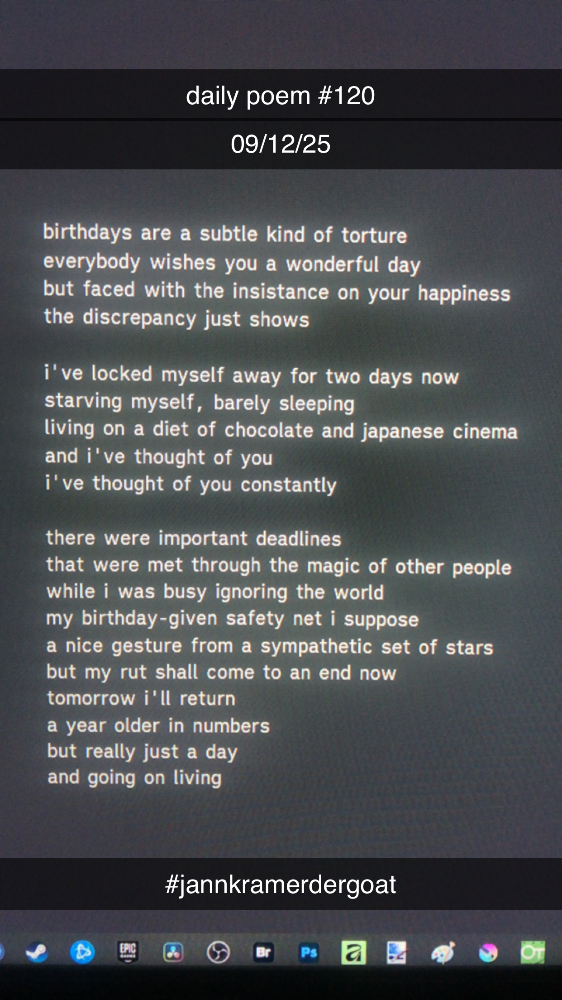

Birthdays Are a Subtle Kind of Torture
birthdays are a subtle kind of torture
everybody wishes you a wonderful day
but faced with the insistance on your happiness
the discrepancy just shows
i've locked myself away for two days now
starving myself, barely sleeping
living on a diet of chocolate and japanese cinema
and i've thought of you
i've thought of you constantly
there were important deadlines
that were met through the magic of other people
while i was busy ignoring the world
my birthday-given safety net i suppose
a nice gesture from a sympathetic set of stars
but my rut shall come to an end now
tomorrow i'll return
a year older in numbers
but really just a day
and going on living
